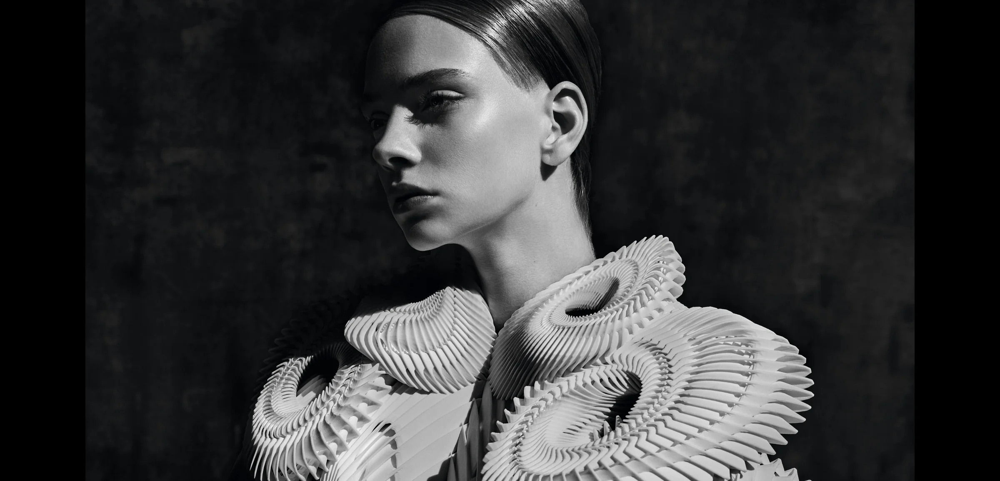
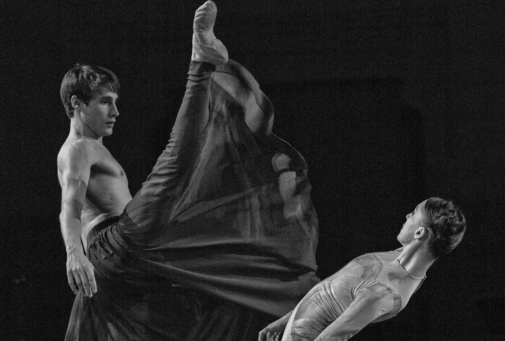
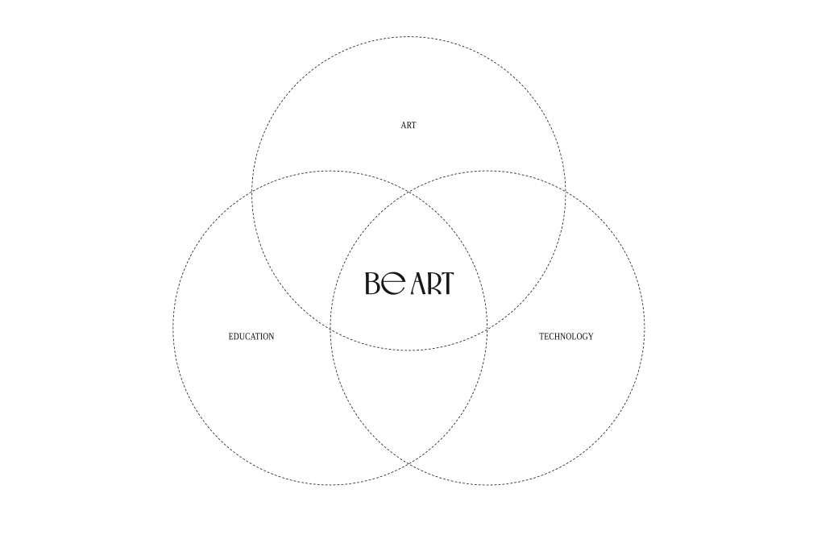

LA RÉVOLUTION DE L’HUMANITÉ
01 Be Art
Be Art
Be Art es una iniciativa privada de carácter cultural, social y educativo, única en Europa por sus características. El proyecto nace de una larga trayectoria iniciada durante una crisis económica que, con el tiempo, ha evolucionado hacia una crisis global de valores.
Be Art: La creación, organización y activación de acciones estratégicas para el fortalecimiento del ecosistema cultural, orientadas hacia la transformación social y económica desde la cultura: exposiciones, conciertos, eventos multidisciplinares o foros de debate sobre la acción cultural. Se trata de articular una potente herramienta que despliegue acciones culturales en los mejores y más espectaculares espacios y museos de referencia de Europa y América. En nuestra trayectoria, hemos reunido a artistas de primer nivel tanto en el ámbito nacional como internacional. Entre ellos destacamos al arquitecto japonés ganador del Premio Pritzker 2013, Toyo Ito, y a Norman Foster, arquitecto británico galardonado con el mismo premio en 1999, al pianista y musicólogo británico Michael Nyman, compositor de varias bandas sonoras para el cine. Y sopranos como Ainhoa Arteta y la Fundación María Callas entre muchos otros artistas nacionales e internacionales.

02 Áreas de trabajo
Qué hacemos
Be Art es una agencia de gestión y comunicación especializada en cultura e innovación. Convertimos ideas en proyectos culturales con impacto positivo mediante las estrategias, los procesos y las políticas necesarios para hacerlos realidad.
Adaptamos cada proyecto a las necesidades del cliente: desde el desarrollo de conceptos y materiales hasta su presentación en medios nacionales e internacionales. Producimos y gestionamos iniciativas culturales y creamos alianzas estratégicas con centros culturales, instituciones públicas, fundaciones, empresas privadas y marcas.
Como consultora de innovación cultural, diseñamos activaciones a medida en los ámbitos de la formación, el impacto social, la estrategia cultural, la identidad y la comunicación.

03 Educación
Arte y educación para la reflexión
«Arte y Educación para la Reflexión» es un espacio dedicado a investigar y promover el desarrollo humano a través del contacto con las artes. Parte de la convicción de que la relación con la cultura desde la infancia puede fomentar la sensibilidad, la creatividad y una convivencia alejada de la violencia.
La misión fundamental del proyecto es educar en una cultura de paz y en el respeto de los derechos humanos a través del arte. La educación, la tolerancia y el respeto son esenciales para la convivencia.
El entorno familiar, el contacto con la naturaleza, el juego imaginativo, la pintura, la música y la lectura influyen en el desarrollo emocional e intelectual durante la infancia. A través de los grandes artistas comprendemos mejor la sociedad y reconocemos distintas formas de cultivar la energía creativa.